UFO Rise (leo thang có chốt an toàn)
Sự kiện leo thang: thắng màn thì UFO bay lên một bậc, thua thì rơi xuống — nhưng chỉ rơi tới chốt an toàn (checkpoint) gần nhất.
Mô tả
- Leo tháp: thắng màn thì UFO lên 1 bậc, thua thì rơi về checkpoint cao nhất ≤ bậc hiện tại (FallDownTo). Rương đã mở không bị thu lại. Live 28/10:
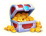
10 rương ở bậc 2…120, checkpoint 5/13/28/46/120 (khoảng cách 5, 8, 15, 18, 74); kỳ 3,5 ngày. Khi Collection chạy dùng rewardModelWithCollection.
Thiết kế chi tiết
Tóm tắt thiết kế
PlaytestLive 28/10 Kỳ 26/10 07:00 → 29/10 19:00 UTC (3,5 ngày, trùng khung với Star Blaze), mở từ level 60. Mỗi trận thắng UFO lên 1 bậc. Tháp có 10 rương ở bậc 2, 5, 8, 13, 20, 28, 36, 46, 77, 120; trong đó 5, 13, 28, 46, 120 là checkpoint.
Code Thua thì TryResetWinStreak → FallDownTo(GetCheckPointWinCount()): UFO rơi về checkpoint cao nhất ≤ số bậc hiện tại. Rương đã mở thì giữ nguyên (maxClaimedStepIndex), nên rơi chỉ làm mất tiến độ, không mất quà. Playtest Thua ở bậc 10 thì rơi về 5; rương bậc 8 vẫn hiện đã mở.
Nhận định Khoảng cách giữa các checkpoint giãn dần (5, 8, 15, 18, rồi 74). 4 checkpoint đầu thì ai cũng tới được, còn đoạn 46 → 120 đòi 74 trận thắng không thua. Đây là nơi Play On (900/1.900/2.900 coin) và booster đáng tiền nhất, vì chúng giúp không bị tính thua.
Live 28/10 Khi Collection đang chạy, các rương bậc 2, 13, 28, 46, 77, 120 đổi coin/UFO thành gói thẻ (cột “live” bên dưới).
Luồng người chơi từng bước
- Kết thúc kỳ cũGiao diện PlaytestMở game: popup tháp UFO Rise với nhãn “Finished”, UFO đứng ở bậc cũ, nút Continue (đây là popup đầu phiên đầu tiên trong 3 popup được phép).
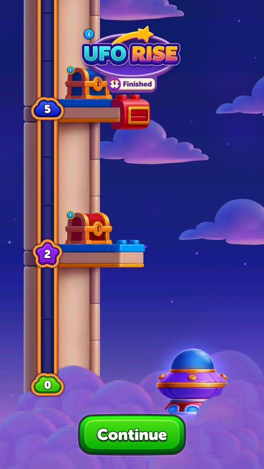
Kỳ trước: Finished - Mở tháp kỳ mớiNgười chơi PlaytestIcon rương bên trái Home đếm ngược 1d 11h. Chạm vào mở tháp: UFO ở chân tháp (bậc 0), rương bậc 2 có tooltip gói thẻ 2 lá, rương bậc 5 có nhãn checkpoint.
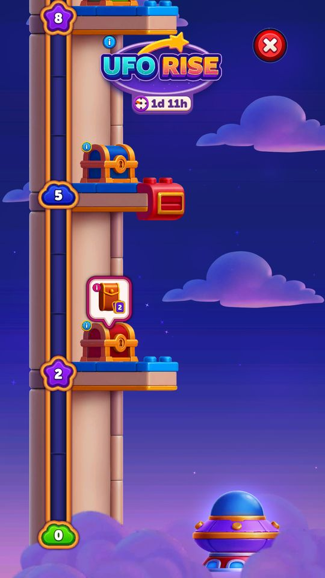
Kỳ mới: bậc 0, rương 2/5/8 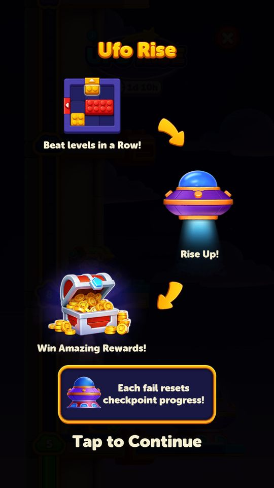
Luật: thắng liền mạch, mỗi lần thua về checkpoint - Banner trên popup thắngGiao diện PlaytestPopup PERFECT! có thanh UFO Rise: các rương trên một trục ngang, bậc đã qua có dấu tích, UFO bay tới vị trí mới.
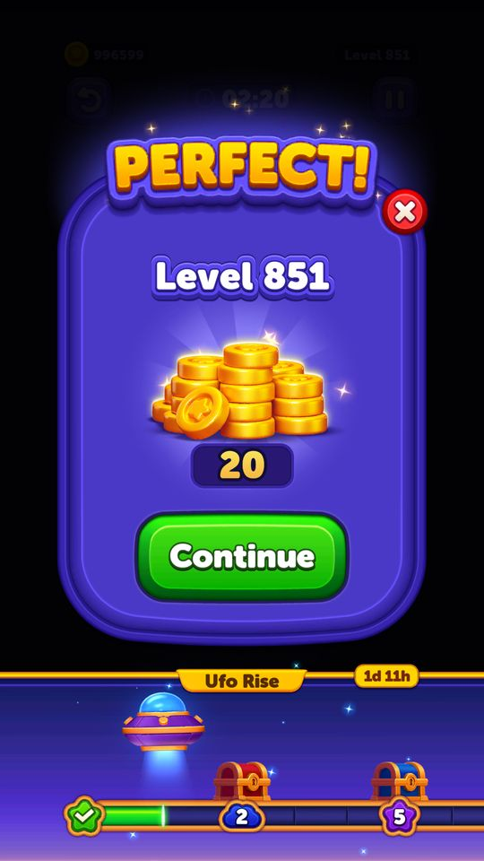
Banner UFO trên popup thắng 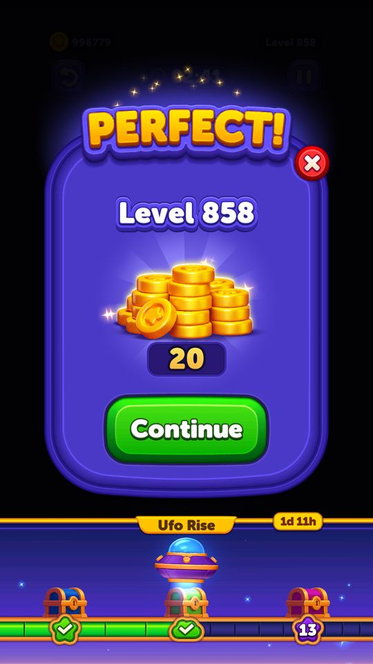
UFO đã qua rương bậc 2 và 5 - Chạm rương: tháp tự mởClient PlaytestCodeVề Home, nếu số bậc vừa chạm một rương (
IsCurrentWinCountHasChest) thì tháp tự mở và UFO bay lên. Sau đó là popup Congratulations của rương (bậc 2: gói thẻ → màn Your Cards). Tháp tự mở cả ở bậc 5 và 8, chen trước nút Level.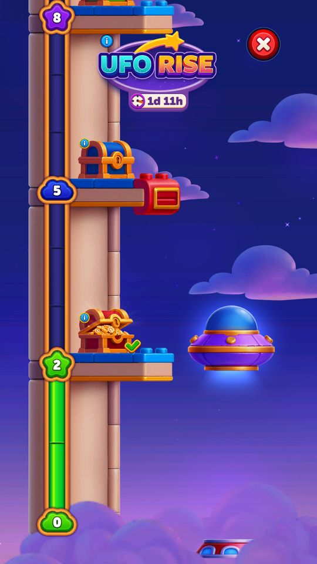
Chạm bậc 2: tháp tự mở 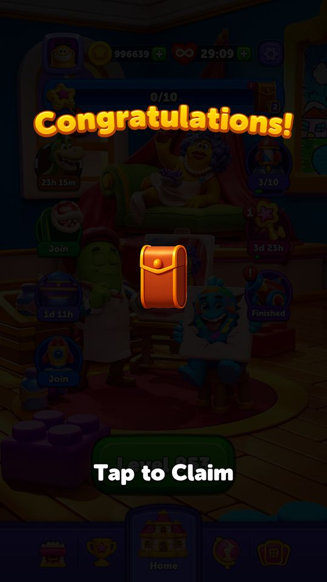
Rương bậc 2: gói thẻ 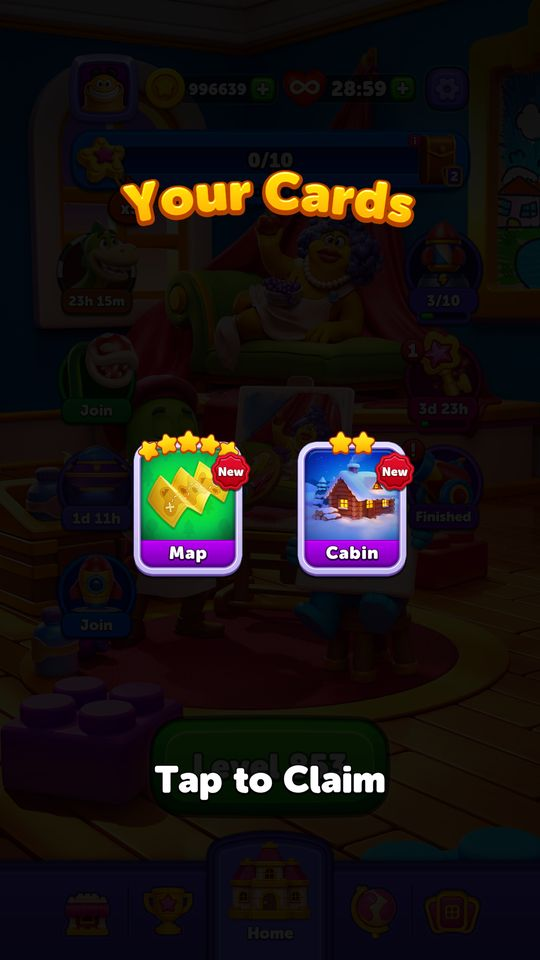
Gói 2 lá: Map 4★, Cabin 2★ 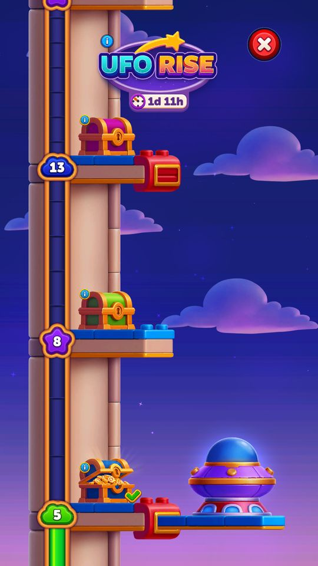
Bậc 5 (checkpoint) 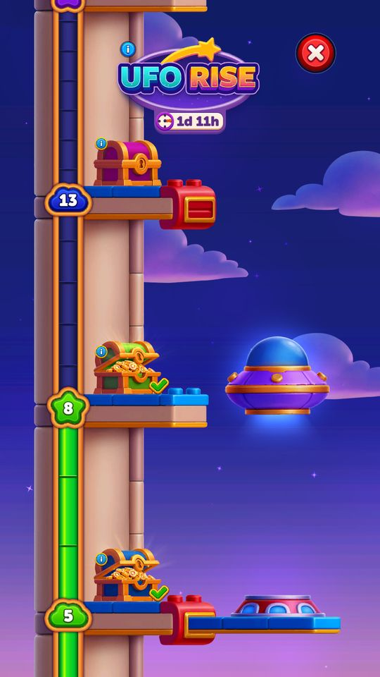
Bậc 8 - Bỏ màn ở bậc 10Người chơi PlaytestPause → Quit: cảnh báo 1 “You will lose your Super Rocket and Supply Box!”, cảnh báo 2 là của UFO Rise: icon 10/13 bị gạch và dòng “You will lose your streak!”. Lần này không có cảnh báo Star Blaze dù đang ×100, nên có vẻ mỗi lần thoát chỉ có một cảnh báo sự kiện.

Trong màn: Super Rocket + power-up Supply Box 
Cảnh báo 1: mất Super Rocket và Supply Box 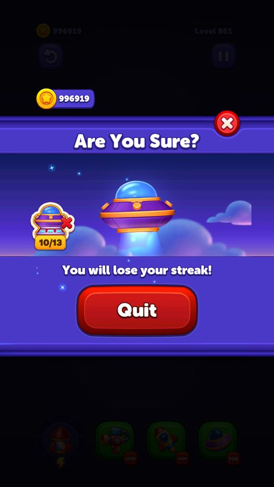
Cảnh báo 2 (UFO): 10/13, mất chuỗi - Rơi về checkpointClient PlaytestCodeTháp tự mở đè lên popup Level Failed: UFO đã ở bậc 5, rương bậc 8 vẫn mở. Đóng tháp thì còn popup Level Failed (Try Again, banner Streak Race ×1).
Rơi về 5, rương 8 vẫn mở 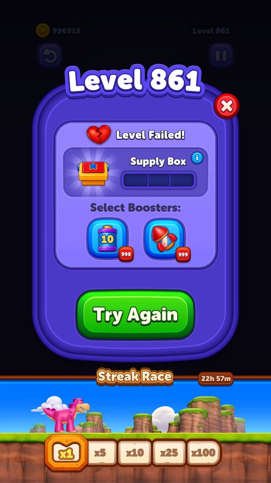
Sau tháp là Level Failed - Đỉnh tháp / hết giờClient Code
IsReachedMaxWinCount(bậc ≥ 120) gửiSendUfoRiseWon; hết giờ thìSendUfoRiseFinished. Kỳ mới đến từTryStartNewEventkhi server trả eventId khác.


Tháp 120 bậc (live 28/10)
| Bậc | Checkpoint | Rương (đang có Collection) | Rương (không Collection) | Thua ở đây thì |
|---|---|---|---|---|
| 2 | gói thẻ 2 lá |  50 coin 50 coin | rơi về 0 | |
| 5 | ✔ checkpoint |  15 phút mạng vô hạn 15 phút mạng vô hạn | 15 phút mạng vô hạn | giữ 5 |
| 8 |  Rocket ×1 Rocket ×1 | Rocket ×1 | rơi về 5 | |
| 13 | ✔ checkpoint | 50 coin + gói thẻ 3 lá | 100 coin | giữ 13 |
| 20 | Rocket ×1 + 15 phút mạng vô hạn | Rocket ×1 + 15 phút mạng vô hạn | rơi về 13 | |
| 28 | ✔ checkpoint | gói thẻ 4 lá + 15 phút mạng vô hạn | 150 coin + 15 phút mạng vô hạn | giữ 28 |
| 36 |  Time Freeze ×1 + 30 phút mạng vô hạn Time Freeze ×1 + 30 phút mạng vô hạn | Time Freeze ×1 + 30 phút mạng vô hạn | rơi về 28 | |
| 46 | ✔ checkpoint | 50 coin + gói thẻ 3 lá + 1 giờ mạng vô hạn | 500 coin + 1 giờ mạng vô hạn | giữ 46 |
| 77 | gói thẻ 4 lá + 1 giờ mạng vô hạn |  UFO ×1 + 1 giờ mạng vô hạn UFO ×1 + 1 giờ mạng vô hạn | rơi về 46 | |
| 120 | ✔ checkpoint | 200 coin + gói thẻ 5 lá + 1 giờ mạng vô hạn + Rocket ×1 + UFO ×1 | 1.200 coin + Rocket ×1 + Time Freeze ×1 + UFO ×1 + 1 giờ mạng vô hạn | giữ 120 |
Live 28/10 ufoRiseConfigModel.steps: mỗi bậc có rewardModel và rewardModelWithCollection. Checkpoint là bậc có isCheckpoint = true.
Mô phỏng 3,5 ngày
| Tỉ lệ thắng ngay lần đầu | 20 lượt | 40 lượt | 80 lượt |
|---|---|---|---|
| 50% | bậc 3 (mở tới rương 2) | bậc 4 (mở tới rương 2) | bậc 9 (mở tới rương 8) |
| 70% | bậc 8 (mở tới rương 8) | bậc 11 (mở tới rương 8) | bậc 18 (mở tới rương 13) |
| 80% | bậc 10 (mở tới rương 8) | bậc 18 (mở tới rương 13) | bậc 24 (mở tới rương 20) |
| 90% | bậc 15 (mở tới rương 13) | bậc 24 (mở tới rương 20) | bậc 41 (mở tới rương 36) |
Nhận định Trung vị bậc cao nhất từng đạt trong 4.000 lần mô phỏng; thua là rơi về checkpoint. Bậc 77 và 120 gần như 0% nếu không dùng Play On/booster.
Vận dụng cho game khác
- Checkpoint là cách giữ chân người chơi trung bình: thua không về 0, chỉ về mốc gần nhất. Khoảng cách checkpoint giãn dần để vẫn có đỉnh dành cho người chơi giỏi hoặc chịu chi.
- Không thu lại quà khi rơi: phần mất chỉ là tiến độ, nên người chơi ít thấy bị phạt nặng hơn so với reset hoàn toàn.
- Tháp tự mở ngay khi chạm rương và đè lên popup thua khi rơi. Cả hai khoảnh khắc (được quà, bị rơi) đều được phóng to bằng cùng một màn hình.
- Đoạn cuối rất dài (74 bậc) biến Play On và booster thành “bảo hiểm chuỗi”. Nếu game có Play On trả coin, nên đặt sự kiện kiểu này song song.
- Nhận định Rủi ro: popup tháp tự mở chen trước nút Level ở mỗi rương. Người chơi thấy 3 lần trong 10 trận đầu, cộng thêm popup Journey, Light Ball, gói thẻ, nên dễ thấy bị làm phiền.
Bảng tổng hợp mọi tính năng đã làm chi tiết: BlockOut_ThietKeChiTiet.xlsx.
Còn thiếu / chưa xác minh
Mở khóa & điểm vào
UfoRiseConfigModel.FirstLevelToShow = 60, IsEnabled = true, EventType = 2. ShouldShowInLevelIcon = true nên có cả biểu tượng ngay trong màn chơi.
Điểm vào:
- Biểu tượng UFO ở Home
- Biểu tượng trong màn chơi
- Popup khi bắt đầu/kết thúc kỳ
Cách hoạt động
- UfoRiseActionState mô tả chuyển động của UFO: Rise (bay lên), Idle, Fall (rơi), RiseCheckpoint (bay lên chạm chốt), Checkpoint (đang ở chốt).
- UfoRiseUfoState là bản chi tiết hơn cho phần hiển thị, có thêm IdleBanner và FallPopup.
- Thang có 11 bậc thưởng, trong đó 6 bậc là chốt an toàn (step 0, 5, 11, 22, 33, 60).
- Thắng màn -> lên bậc; thua -> rơi về chốt gần nhất phía dưới.
- UfoRisePopUpState (FirstShowEver, FirstShow, InProgress, Result) quyết định nội dung popup; UfoRiseSource ghi nguồn mở (LobbyIcon, EventStart, EventFinish, EventClaimRewards, TryAgain).
Luồng chi tiết theo code
UfoRiseActionState mô tả chuyển động của UFO: Rise (bay lên), Idle, Fall (rơi), RiseCheckpoint (bay lên chạm chốt), Checkpoint (đang ở chốt). UfoRiseUfoState là bản chi tiết hơn cho phần hiển thị, có thêm IdleBanner và FallPopup. Cache 10/10 có 11 mốc từ 0 tới 120, trong đó 6 checkpoint là 0, 5, 13, 28, 46, 120; step 0 là điểm xuất phát, không gọi tất cả 11 mốc là thưởng. Thắng màn -> lên bậc; thua -> rơi về chốt gần nhất phía dưới. UfoRisePopUpState (FirstShowEver, FirstShow, InProgress, Result) quyết định nội dung popup; UfoRiseSource ghi nguồn mở (LobbyIcon, EventStart, EventFinish, EventClaimRewards, TryAgain).
Ảnh chụp màn hình (12)
12 ảnh chụp trong game (LDPlayer, bản 1006, tài khoản thử level 320 → 350 (07/10/2026)). Bấm ảnh để phóng to; nhãn UC dẫn tới use case tương ứng.

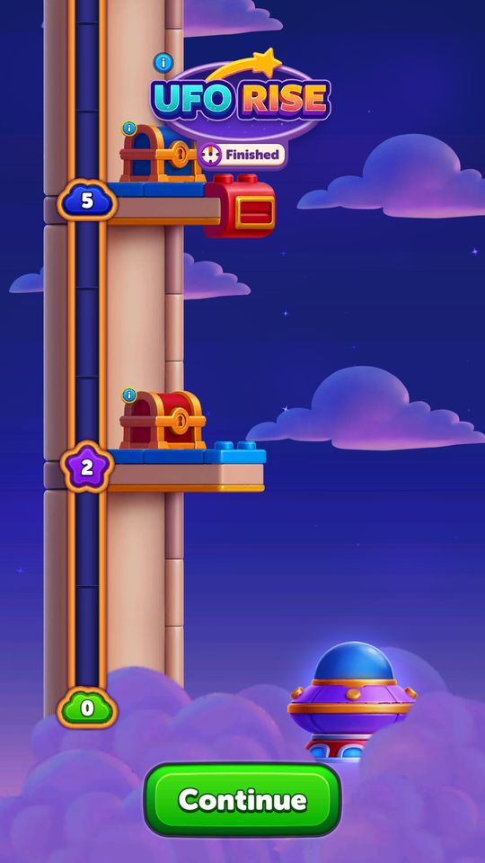

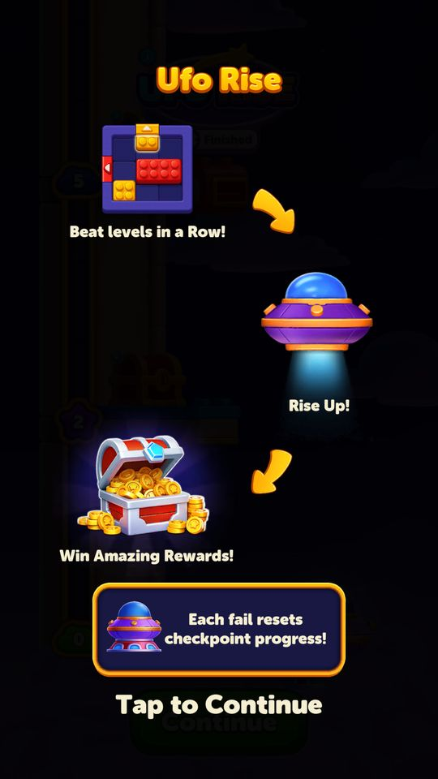

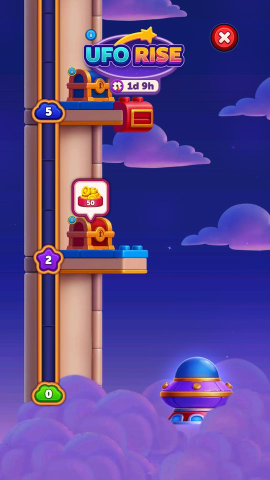
50 coin; UFO ở mốc 0
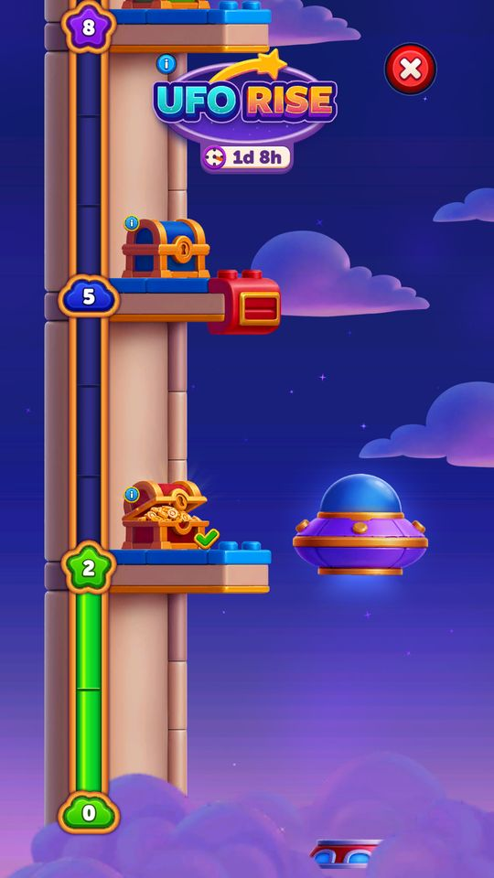

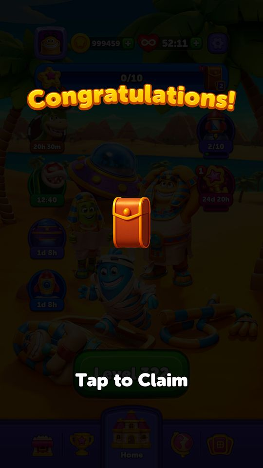
2 UFO Rise: "Congratulations!" — gói thẻ cam (Collection pack) — Tap to Claim
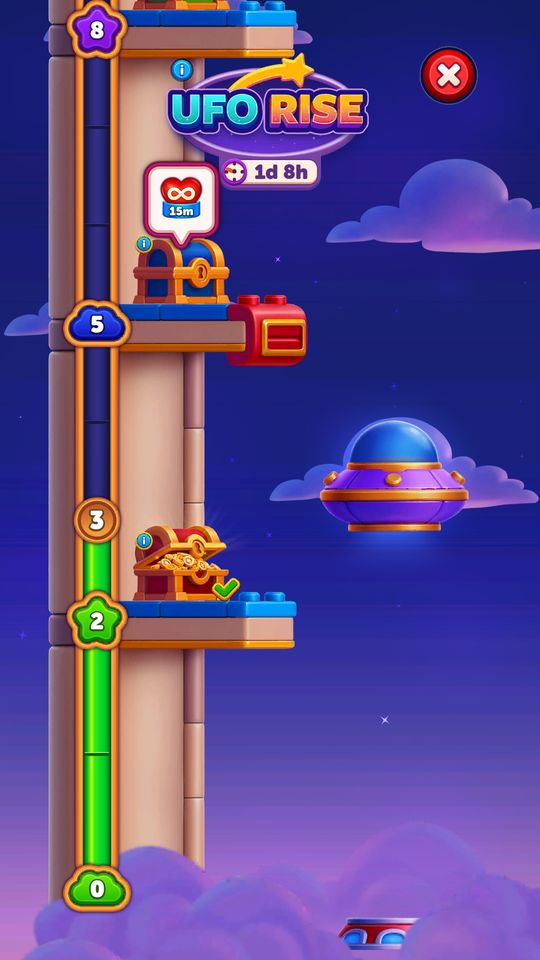
15 phút mạng vô hạn (tooltip khi chạm rương) 15 phút mạng vô hạn đã nhận; mốc kế 8 và 13
15 phút mạng vô hạn đã nhận; mốc kế 8 và 13
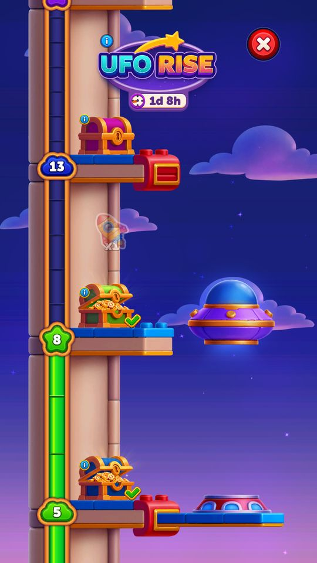

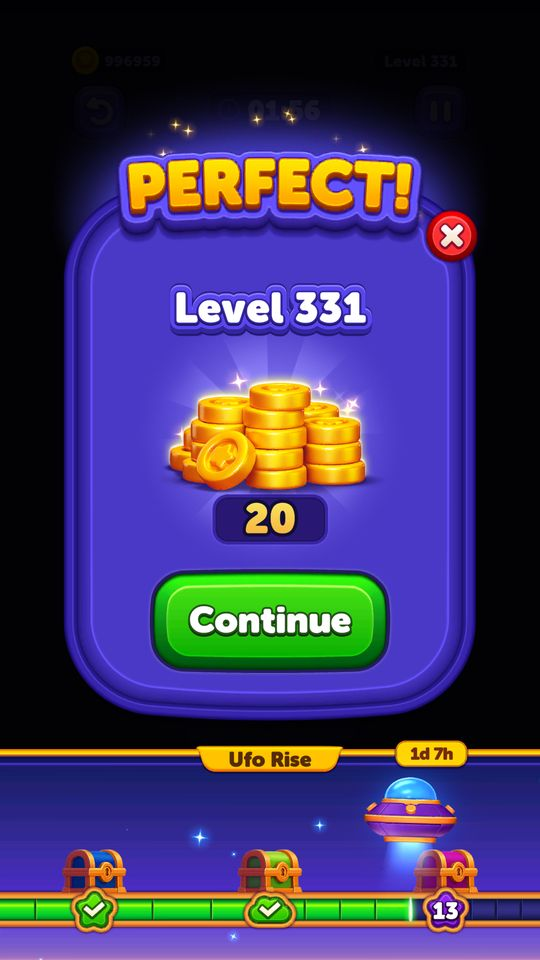


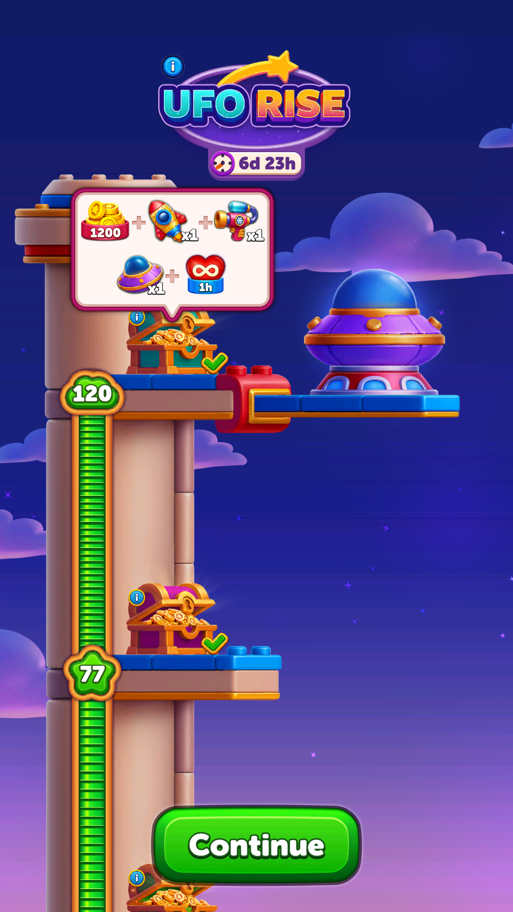
1.200 coin, Rocket ×1, Freeze ×1, UFO ×1 và 1 giờ mạng vô hạn. Snapshot riêng ghi coin cục bộ tăng 996.179 → 997.379 và chỉ số mốc đã nhận tăng 9 → 10; đây là phần thưởng được cộng cục bộ trong fixture. Fixture: ufo-final; tooltip sau nhận cục bộ.
Phần thưởng
Phần thưởng theo code
| Ngữ cảnh | Phần thưởng | Evidence |
|---|---|---|
| Cache10/10: mốc2/13/28/46/120, không Collection | 50/100/150/500/1200coin các mốc cao còn có mạng hoặc booster | facts/runtime/test_20261010/before/CachedRemoteConfigs:ufoRiseConfigModel.steps[].rewardModel |
| Cache10/10: Collection đang chạy | Nhánh rewardModelWithCollection thay một phần coin/booster bằng pack mốc120 có200coin PackType4 mạng1giờ Rocket1 UFO1 | CachedRemoteConfigs:ufoRiseConfigModel.steps[].rewardModelWithCollection |
Số liệu chính
| Chỉ số | Giá trị | Nguồn |
|---|---|---|
| UfoRiseConfigModel.FirstLevelToShow | 60 | UfoRiseConfigModel.FirstLevelToShow — Assets/Resources/defaultconfigs/UfoRiseConfigModel.json |
| UfoRiseConfigModel.EventType | 2 | UfoRiseConfigModel.EventType — Assets/Resources/defaultconfigs/UfoRiseConfigModel.json |
| UfoRiseConfigModel.Steps[0].Step | 0 | UfoRiseConfigModel.Steps[0].Step — Assets/Resources/defaultconfigs/UfoRiseConfigModel.json |
| UfoRiseConfigModel.Steps[1].Step | 2 | UfoRiseConfigModel.Steps[1].Step — Assets/Resources/defaultconfigs/UfoRiseConfigModel.json |
| UfoRiseConfigModel.Steps[1].ChestViewType | 15 | UfoRiseConfigModel.Steps[1].ChestViewType — Assets/Resources/defaultconfigs/UfoRiseConfigModel.json |
| UfoRiseConfigModel.Steps[1].RewardModel.CurrencyType | 13 | UfoRiseConfigModel.Steps[1].RewardModel.CurrencyType — Assets/Resources/defaultconfigs/UfoRiseConfigModel.json |
| UfoRiseConfigModel.Steps[1].RewardModel.Amount | 1 | UfoRiseConfigModel.Steps[1].RewardModel.Amount — Assets/Resources/defaultconfigs/UfoRiseConfigModel.json |
| UfoRiseConfigModel.Steps[1].RewardModel.Rewards[0].CurrencyType | 1 | UfoRiseConfigModel.Steps[1].RewardModel.Rewards[0].CurrencyType — Assets/Resources/defaultconfigs/UfoRiseConfigModel.json |
| UfoRiseConfigModel.Steps[1].RewardModel.Rewards[0].Amount | 50 | UfoRiseConfigModel.Steps[1].RewardModel.Rewards[0].Amount — Assets/Resources/defaultconfigs/UfoRiseConfigModel.json |
| UfoRiseConfigModel.Steps[1].RewardModelWithCollection.CurrencyType | 13 | UfoRiseConfigModel.Steps[1].RewardModelWithCollection.CurrencyType — Assets/Resources/defaultconfigs/UfoRiseConfigModel.json |
| UfoRiseConfigModel.Steps[1].RewardModelWithCollection.Amount | 1 | UfoRiseConfigModel.Steps[1].RewardModelWithCollection.Amount — Assets/Resources/defaultconfigs/UfoRiseConfigModel.json |
| UfoRiseConfigModel.Steps[1].RewardModelWithCollection.Rewards[0].currencyType | 14 | UfoRiseConfigModel.Steps[1].RewardModelWithCollection.Rewards[0].currencyType — Assets/Resources/defaultconfigs/UfoRiseConfigModel.json |
| UfoRiseConfigModel.Steps[1].RewardModelWithCollection.Rewards[0].amount | 1 | UfoRiseConfigModel.Steps[1].RewardModelWithCollection.Rewards[0].amount — Assets/Resources/defaultconfigs/UfoRiseConfigModel.json |
| UfoRiseConfigModel.Steps[1].RewardModelWithCollection.Rewards[0].CollectionPackType | 1 | UfoRiseConfigModel.Steps[1].RewardModelWithCollection.Rewards[0].CollectionPackType — Assets/Resources/defaultconfigs/UfoRiseConfigModel.json |
| UfoRiseConfigModel.Steps[2].Step | 5 | UfoRiseConfigModel.Steps[2].Step — Assets/Resources/defaultconfigs/UfoRiseConfigModel.json |
| UfoRiseConfigModel.Steps[2].ChestViewType | 16 | UfoRiseConfigModel.Steps[2].ChestViewType — Assets/Resources/defaultconfigs/UfoRiseConfigModel.json |
| UfoRiseConfigModel.Steps[2].RewardModel.CurrencyType | 13 | UfoRiseConfigModel.Steps[2].RewardModel.CurrencyType — Assets/Resources/defaultconfigs/UfoRiseConfigModel.json |
| UfoRiseConfigModel.Steps[2].RewardModel.Amount | 1 | UfoRiseConfigModel.Steps[2].RewardModel.Amount — Assets/Resources/defaultconfigs/UfoRiseConfigModel.json |
Use case (4)
Bấm vào từng use case để mở. Mở/đóng tất cả
UC-01 Thắng màn, UFO bay lên
Các bước- UfoRiseActionState = Rise (hoặc RiseCheckpoint nếu bậc mới là chốt)
- UfoRiseDataService lưu bậc mới
- Có thưởng ở bậc đó thì RewardService trao
| Actor | Player |
|---|---|
| Trigger | Thắng một màn |
| Điều kiện | Sự kiện đang chạy |
| Kết quả | Tiến lên một bậc, có thể nhận quà |
| Quy tắc / số liệu | Cache 10/10: mốc 0, 2, 5, 8, 13, 20, 28, 36, 46, 77, 120; mốc 0 không có rewardModel. Bảng cũ kết thúc 60 là cấu hình lịch sử. |
| Evidence | enum UfoRiseActionState; UfoRiseConfigModel.Steps |
UC-02 Thua màn, rơi về chốt an toàn
Các bước- UfoRiseActionState = Fall
- Tìm chốt (IsCheckpoint = true) gần nhất phía dưới
- UfoRiseUfoState = FallPopup hiện popup báo rơi
| Actor | System |
|---|---|
| Trigger | Thua một màn |
| Điều kiện | - |
| Kết quả | Mất tiến độ nhưng không về 0 |
| Quy tắc / số liệu | Checkpoint cache 10/10: 0, 5, 13, 28, 46, 120; khoảng cách lần lượt 5, 8, 15, 18, 74. Mốc có quà 77 không phải checkpoint. |
| Evidence | enum UfoRiseActionState; enum UfoRiseUfoState; UfoRiseConfigModel.Steps[].IsCheckpoint |
UC-03 Nhận thưởng đỉnh thang
Các bước- Bậc 120 là checkpoint cuối của bảng hiện tại
- RewardService chọn rewardModel hoặc rewardModelWithCollection theo điều kiện Collection
| Actor | Player |
|---|---|
| Trigger | Đạt bậc 120 trong config 10/10 |
| Điều kiện | - |
| Kết quả | Phần thưởng đáng kể nhất của sự kiện |
| Quy tắc / số liệu | Bậc 120 thường: 1200 coin + Rocket1 + Freeze1 + UFO1 + mạng vô hạn1giờ. WithCollection: 200coin + PackType4 + mạng1giờ + Rocket1 + UFO1. Giá trị ở dòng config mặc định cũ giữ để đối chiếu lịch sử, không phải đích runtime hiện tại. |
| Evidence | UfoRiseConfigModel.Steps[10] |
UC-04 Biểu tượng ngay trong màn chơi
Các bước- Hiện biểu tượng UFO trong màn
- Nhắc người chơi đang có gì để mất nếu thua
| Actor | System |
|---|---|
| Trigger | Vào màn |
| Điều kiện | ShouldShowInLevelIcon = true |
| Kết quả | Tăng áp lực tâm lý ngay lúc chơi |
| Quy tắc / số liệu | Đây là sự kiện duy nhất có cờ ShouldShowInLevelIcon |
| Evidence | UfoRiseConfigModel.ShouldShowInLevelIcon |
Cấu hình (275)
Gộp mọi nguồn: const trong code, JSON mặc định trong Resources, bảng static, storage key, AB test, cờ server.
| Nguồn | Key | Kiểu | Giá trị | Ý nghĩa | Nơi định nghĩa |
|---|---|---|---|---|---|
| code const | UfoRiseActionState | enum | Rise=0, Idle=1, Fall=2, RiseCheckpoint=3, Checkpoint=4 | Trạng thái chuyển động | enum UfoRiseActionState |
| code const | UfoRiseUfoState | enum | Idle=0, Rise=1, Fall=2, IdleBanner=3, FallPopup=4, RiseCheckpoint=5, Checkpoint=6 | Trạng thái hiển thị chi tiết | enum UfoRiseUfoState |
| code const | UfoRiseSource | enum | None=0, LobbyIcon=1, EventStart=2, EventFinish=3, EventClaimRewards=4, TryAgain=5 | Nguồn mở popup | enum UfoRiseSource |
| json default | UfoRiseConfigModel.IsEnabled | bool | true | Assets/Resources/defaultconfigs/UfoRiseConfigModel.json | |
| json default | UfoRiseConfigModel.FirstLevelToShow | int | 60 | Assets/Resources/defaultconfigs/UfoRiseConfigModel.json | |
| json default | UfoRiseConfigModel.EventType | int | 2 | Assets/Resources/defaultconfigs/UfoRiseConfigModel.json | |
| json default | UfoRiseConfigModel.ShouldShowInLevelIcon | bool | true | Assets/Resources/defaultconfigs/UfoRiseConfigModel.json | |
| json default | UfoRiseConfigModel.Steps[0].Step | int | 0 | Assets/Resources/defaultconfigs/UfoRiseConfigModel.json | |
| json default | UfoRiseConfigModel.Steps[0].IsCheckpoint | bool | true | Assets/Resources/defaultconfigs/UfoRiseConfigModel.json | |
| json default | UfoRiseConfigModel.Steps[1].Step | int | 2 | Assets/Resources/defaultconfigs/UfoRiseConfigModel.json | |
| json default | UfoRiseConfigModel.Steps[1].IsCheckpoint | bool | false | Assets/Resources/defaultconfigs/UfoRiseConfigModel.json | |
| json default | UfoRiseConfigModel.Steps[1].ChestViewType | int | 15 | Assets/Resources/defaultconfigs/UfoRiseConfigModel.json | |
| json default | UfoRiseConfigModel.Steps[1].RewardModel.CurrencyType | int | 13 | Assets/Resources/defaultconfigs/UfoRiseConfigModel.json | |
| json default | UfoRiseConfigModel.Steps[1].RewardModel.Amount | int | 1 | Assets/Resources/defaultconfigs/UfoRiseConfigModel.json | |
| json default | UfoRiseConfigModel.Steps[1].RewardModel.Rewards[0].CurrencyType | int | 1 | Assets/Resources/defaultconfigs/UfoRiseConfigModel.json | |
| json default | UfoRiseConfigModel.Steps[1].RewardModel.Rewards[0].Amount | int | 50 | Assets/Resources/defaultconfigs/UfoRiseConfigModel.json | |
| json default | UfoRiseConfigModel.Steps[1].RewardModelWithCollection.CurrencyType | int | 13 | Assets/Resources/defaultconfigs/UfoRiseConfigModel.json | |
| json default | UfoRiseConfigModel.Steps[1].RewardModelWithCollection.Amount | int | 1 | Assets/Resources/defaultconfigs/UfoRiseConfigModel.json | |
| json default | UfoRiseConfigModel.Steps[1].RewardModelWithCollection.Rewards[0].currencyType | int | 14 | Assets/Resources/defaultconfigs/UfoRiseConfigModel.json | |
| json default | UfoRiseConfigModel.Steps[1].RewardModelWithCollection.Rewards[0].amount | int | 1 | Assets/Resources/defaultconfigs/UfoRiseConfigModel.json | |
| json default | UfoRiseConfigModel.Steps[1].RewardModelWithCollection.Rewards[0].CollectionPackType | int | 1 | Assets/Resources/defaultconfigs/UfoRiseConfigModel.json | |
| json default | UfoRiseConfigModel.Steps[2].Step | int | 5 | Assets/Resources/defaultconfigs/UfoRiseConfigModel.json | |
| json default | UfoRiseConfigModel.Steps[2].IsCheckpoint | bool | true | Assets/Resources/defaultconfigs/UfoRiseConfigModel.json | |
| json default | UfoRiseConfigModel.Steps[2].ChestViewType | int | 16 | Assets/Resources/defaultconfigs/UfoRiseConfigModel.json | |
| json default | UfoRiseConfigModel.Steps[2].RewardModel.CurrencyType | int | 13 | Assets/Resources/defaultconfigs/UfoRiseConfigModel.json | |
| json default | UfoRiseConfigModel.Steps[2].RewardModel.Amount | int | 1 | Assets/Resources/defaultconfigs/UfoRiseConfigModel.json | |
| json default | UfoRiseConfigModel.Steps[2].RewardModel.Rewards[0].currencyType | int | 2 | Assets/Resources/defaultconfigs/UfoRiseConfigModel.json | |
| json default | UfoRiseConfigModel.Steps[2].RewardModel.Rewards[0].amount | int | 0 | Assets/Resources/defaultconfigs/UfoRiseConfigModel.json | |
| json default | UfoRiseConfigModel.Steps[2].RewardModel.Rewards[0].timeSpan | string | 00:15:00 | Assets/Resources/defaultconfigs/UfoRiseConfigModel.json | |
| json default | UfoRiseConfigModel.Steps[3].Step | int | 8 | Assets/Resources/defaultconfigs/UfoRiseConfigModel.json | |
| json default | UfoRiseConfigModel.Steps[3].IsCheckpoint | bool | false | Assets/Resources/defaultconfigs/UfoRiseConfigModel.json | |
| json default | UfoRiseConfigModel.Steps[3].ChestViewType | int | 17 | Assets/Resources/defaultconfigs/UfoRiseConfigModel.json | |
| json default | UfoRiseConfigModel.Steps[3].RewardModel.CurrencyType | int | 13 | Assets/Resources/defaultconfigs/UfoRiseConfigModel.json | |
| json default | UfoRiseConfigModel.Steps[3].RewardModel.Amount | int | 1 | Assets/Resources/defaultconfigs/UfoRiseConfigModel.json | |
| json default | UfoRiseConfigModel.Steps[3].RewardModel.Rewards[0].CurrencyType | int | 4 | Assets/Resources/defaultconfigs/UfoRiseConfigModel.json | |
| json default | UfoRiseConfigModel.Steps[3].RewardModel.Rewards[0].Amount | int | 1 | Assets/Resources/defaultconfigs/UfoRiseConfigModel.json | |
| json default | UfoRiseConfigModel.Steps[4].Step | int | 11 | Assets/Resources/defaultconfigs/UfoRiseConfigModel.json | |
| json default | UfoRiseConfigModel.Steps[4].IsCheckpoint | bool | true | Assets/Resources/defaultconfigs/UfoRiseConfigModel.json | |
| json default | UfoRiseConfigModel.Steps[4].ChestViewType | int | 18 | Assets/Resources/defaultconfigs/UfoRiseConfigModel.json | |
| json default | UfoRiseConfigModel.Steps[4].RewardModel.CurrencyType | int | 13 | Assets/Resources/defaultconfigs/UfoRiseConfigModel.json | |
| json default | UfoRiseConfigModel.Steps[4].RewardModel.Amount | int | 1 | Assets/Resources/defaultconfigs/UfoRiseConfigModel.json | |
| json default | UfoRiseConfigModel.Steps[4].RewardModel.Rewards[0].CurrencyType | int | 1 | Assets/Resources/defaultconfigs/UfoRiseConfigModel.json | |
| json default | UfoRiseConfigModel.Steps[4].RewardModel.Rewards[0].Amount | int | 200 | Assets/Resources/defaultconfigs/UfoRiseConfigModel.json | |
| json default | UfoRiseConfigModel.Steps[4].RewardModelWithCollection.CurrencyType | int | 13 | Assets/Resources/defaultconfigs/UfoRiseConfigModel.json | |
| json default | UfoRiseConfigModel.Steps[4].RewardModelWithCollection.Amount | int | 1 | Assets/Resources/defaultconfigs/UfoRiseConfigModel.json | |
| json default | UfoRiseConfigModel.Steps[4].RewardModelWithCollection.Rewards[0].CurrencyType | int | 1 | Assets/Resources/defaultconfigs/UfoRiseConfigModel.json | |
| json default | UfoRiseConfigModel.Steps[4].RewardModelWithCollection.Rewards[0].Amount | int | 50 | Assets/Resources/defaultconfigs/UfoRiseConfigModel.json | |
| json default | UfoRiseConfigModel.Steps[4].RewardModelWithCollection.Rewards[1].currencyType | int | 14 | Assets/Resources/defaultconfigs/UfoRiseConfigModel.json | |
| json default | UfoRiseConfigModel.Steps[4].RewardModelWithCollection.Rewards[1].amount | int | 1 | Assets/Resources/defaultconfigs/UfoRiseConfigModel.json | |
| json default | UfoRiseConfigModel.Steps[4].RewardModelWithCollection.Rewards[1].CollectionPackType | int | 2 | Assets/Resources/defaultconfigs/UfoRiseConfigModel.json | |
| json default | UfoRiseConfigModel.Steps[5].Step | int | 17 | Assets/Resources/defaultconfigs/UfoRiseConfigModel.json | |
| json default | UfoRiseConfigModel.Steps[5].IsCheckpoint | bool | false | Assets/Resources/defaultconfigs/UfoRiseConfigModel.json | |
| json default | UfoRiseConfigModel.Steps[5].ChestViewType | int | 19 | Assets/Resources/defaultconfigs/UfoRiseConfigModel.json | |
| json default | UfoRiseConfigModel.Steps[5].RewardModel.CurrencyType | int | 13 | Assets/Resources/defaultconfigs/UfoRiseConfigModel.json | |
| json default | UfoRiseConfigModel.Steps[5].RewardModel.Amount | int | 1 | Assets/Resources/defaultconfigs/UfoRiseConfigModel.json | |
| json default | UfoRiseConfigModel.Steps[5].RewardModel.Rewards[0].CurrencyType | int | 4 | Assets/Resources/defaultconfigs/UfoRiseConfigModel.json | |
| json default | UfoRiseConfigModel.Steps[5].RewardModel.Rewards[0].Amount | int | 1 | Assets/Resources/defaultconfigs/UfoRiseConfigModel.json | |
| json default | UfoRiseConfigModel.Steps[5].RewardModel.Rewards[1].currencyType | int | 2 | Assets/Resources/defaultconfigs/UfoRiseConfigModel.json | |
| json default | UfoRiseConfigModel.Steps[5].RewardModel.Rewards[1].amount | int | 0 | Assets/Resources/defaultconfigs/UfoRiseConfigModel.json | |
| json default | UfoRiseConfigModel.Steps[5].RewardModel.Rewards[1].timeSpan | string | 00:15:00 | Assets/Resources/defaultconfigs/UfoRiseConfigModel.json | |
| json default | UfoRiseConfigModel.Steps[6].Step | int | 22 | Assets/Resources/defaultconfigs/UfoRiseConfigModel.json | |
| json default | UfoRiseConfigModel.Steps[6].IsCheckpoint | bool | true | Assets/Resources/defaultconfigs/UfoRiseConfigModel.json | |
| json default | UfoRiseConfigModel.Steps[6].ChestViewType | int | 15 | Assets/Resources/defaultconfigs/UfoRiseConfigModel.json | |
| json default | UfoRiseConfigModel.Steps[6].RewardModel.CurrencyType | int | 13 | Assets/Resources/defaultconfigs/UfoRiseConfigModel.json | |
| json default | UfoRiseConfigModel.Steps[6].RewardModel.Amount | int | 1 | Assets/Resources/defaultconfigs/UfoRiseConfigModel.json | |
| json default | UfoRiseConfigModel.Steps[6].RewardModel.Rewards[0].CurrencyType | int | 1 | Assets/Resources/defaultconfigs/UfoRiseConfigModel.json | |
| json default | UfoRiseConfigModel.Steps[6].RewardModel.Rewards[0].Amount | int | 100 | Assets/Resources/defaultconfigs/UfoRiseConfigModel.json | |
| json default | UfoRiseConfigModel.Steps[6].RewardModel.Rewards[1].currencyType | int | 2 | Assets/Resources/defaultconfigs/UfoRiseConfigModel.json | |
| json default | UfoRiseConfigModel.Steps[6].RewardModel.Rewards[1].amount | int | 0 | Assets/Resources/defaultconfigs/UfoRiseConfigModel.json | |
| json default | UfoRiseConfigModel.Steps[6].RewardModel.Rewards[1].timeSpan | string | 00:15:00 | Assets/Resources/defaultconfigs/UfoRiseConfigModel.json | |
| json default | UfoRiseConfigModel.Steps[6].RewardModelWithCollection.CurrencyType | int | 13 | Assets/Resources/defaultconfigs/UfoRiseConfigModel.json | |
| json default | UfoRiseConfigModel.Steps[6].RewardModelWithCollection.Amount | int | 1 | Assets/Resources/defaultconfigs/UfoRiseConfigModel.json | |
| json default | UfoRiseConfigModel.Steps[6].RewardModelWithCollection.Rewards[0].CurrencyType | int | 1 | Assets/Resources/defaultconfigs/UfoRiseConfigModel.json | |
| json default | UfoRiseConfigModel.Steps[6].RewardModelWithCollection.Rewards[0].Amount | int | 100 | Assets/Resources/defaultconfigs/UfoRiseConfigModel.json | |
| json default | UfoRiseConfigModel.Steps[6].RewardModelWithCollection.Rewards[1].currencyType | int | 14 | Assets/Resources/defaultconfigs/UfoRiseConfigModel.json | |
| json default | UfoRiseConfigModel.Steps[6].RewardModelWithCollection.Rewards[1].amount | int | 1 | Assets/Resources/defaultconfigs/UfoRiseConfigModel.json | |
| json default | UfoRiseConfigModel.Steps[6].RewardModelWithCollection.Rewards[1].CollectionPackType | int | 3 | Assets/Resources/defaultconfigs/UfoRiseConfigModel.json | |
| json default | UfoRiseConfigModel.Steps[6].RewardModelWithCollection.Rewards[2].currencyType | int | 2 | Assets/Resources/defaultconfigs/UfoRiseConfigModel.json | |
| json default | UfoRiseConfigModel.Steps[6].RewardModelWithCollection.Rewards[2].amount | int | 0 | Assets/Resources/defaultconfigs/UfoRiseConfigModel.json | |
| json default | UfoRiseConfigModel.Steps[6].RewardModelWithCollection.Rewards[2].timeSpan | string | 00:15:00 | Assets/Resources/defaultconfigs/UfoRiseConfigModel.json | |
| json default | UfoRiseConfigModel.Steps[7].Step | int | 28 | Assets/Resources/defaultconfigs/UfoRiseConfigModel.json | |
| json default | UfoRiseConfigModel.Steps[7].IsCheckpoint | bool | false | Assets/Resources/defaultconfigs/UfoRiseConfigModel.json | |
| json default | UfoRiseConfigModel.Steps[7].ChestViewType | int | 16 | Assets/Resources/defaultconfigs/UfoRiseConfigModel.json | |
| json default | UfoRiseConfigModel.Steps[7].RewardModel.CurrencyType | int | 13 | Assets/Resources/defaultconfigs/UfoRiseConfigModel.json | |
| json default | UfoRiseConfigModel.Steps[7].RewardModel.Amount | int | 1 | Assets/Resources/defaultconfigs/UfoRiseConfigModel.json | |
| json default | UfoRiseConfigModel.Steps[7].RewardModel.Rewards[0].CurrencyType | int | 5 | Assets/Resources/defaultconfigs/UfoRiseConfigModel.json | |
| json default | UfoRiseConfigModel.Steps[7].RewardModel.Rewards[0].Amount | int | 1 | Assets/Resources/defaultconfigs/UfoRiseConfigModel.json | |
| json default | UfoRiseConfigModel.Steps[7].RewardModel.Rewards[1].currencyType | int | 2 | Assets/Resources/defaultconfigs/UfoRiseConfigModel.json | |
| json default | UfoRiseConfigModel.Steps[7].RewardModel.Rewards[1].amount | int | 0 | Assets/Resources/defaultconfigs/UfoRiseConfigModel.json | |
| json default | UfoRiseConfigModel.Steps[7].RewardModel.Rewards[1].timeSpan | string | 00:30:00 | Assets/Resources/defaultconfigs/UfoRiseConfigModel.json | |
| json default | UfoRiseConfigModel.Steps[8].Step | int | 33 | Assets/Resources/defaultconfigs/UfoRiseConfigModel.json | |
| json default | UfoRiseConfigModel.Steps[8].IsCheckpoint | bool | true | Assets/Resources/defaultconfigs/UfoRiseConfigModel.json | |
| json default | UfoRiseConfigModel.Steps[8].ChestViewType | int | 17 | Assets/Resources/defaultconfigs/UfoRiseConfigModel.json | |
| json default | UfoRiseConfigModel.Steps[8].RewardModel.CurrencyType | int | 13 | Assets/Resources/defaultconfigs/UfoRiseConfigModel.json | |
| json default | UfoRiseConfigModel.Steps[8].RewardModel.Amount | int | 1 | Assets/Resources/defaultconfigs/UfoRiseConfigModel.json | |
| json default | UfoRiseConfigModel.Steps[8].RewardModel.Rewards[0].CurrencyType | int | 1 | Assets/Resources/defaultconfigs/UfoRiseConfigModel.json | |
| json default | UfoRiseConfigModel.Steps[8].RewardModel.Rewards[0].Amount | int | 500 | Assets/Resources/defaultconfigs/UfoRiseConfigModel.json | |
| json default | UfoRiseConfigModel.Steps[8].RewardModel.Rewards[1].currencyType | int | 2 | Assets/Resources/defaultconfigs/UfoRiseConfigModel.json | |
| json default | UfoRiseConfigModel.Steps[8].RewardModel.Rewards[1].amount | int | 0 | Assets/Resources/defaultconfigs/UfoRiseConfigModel.json | |
| json default | UfoRiseConfigModel.Steps[8].RewardModel.Rewards[1].timeSpan | string | 01:00:00 | Assets/Resources/defaultconfigs/UfoRiseConfigModel.json | |
| json default | UfoRiseConfigModel.Steps[9].Step | int | 42 | Assets/Resources/defaultconfigs/UfoRiseConfigModel.json | |
| json default | UfoRiseConfigModel.Steps[9].IsCheckpoint | bool | false | Assets/Resources/defaultconfigs/UfoRiseConfigModel.json | |
| json default | UfoRiseConfigModel.Steps[9].ChestViewType | int | 18 | Assets/Resources/defaultconfigs/UfoRiseConfigModel.json | |
| json default | UfoRiseConfigModel.Steps[9].RewardModel.CurrencyType | int | 13 | Assets/Resources/defaultconfigs/UfoRiseConfigModel.json | |
| json default | UfoRiseConfigModel.Steps[9].RewardModel.Amount | int | 1 | Assets/Resources/defaultconfigs/UfoRiseConfigModel.json | |
| json default | UfoRiseConfigModel.Steps[9].RewardModel.Rewards[0].CurrencyType | int | 3 | Assets/Resources/defaultconfigs/UfoRiseConfigModel.json | |
| json default | UfoRiseConfigModel.Steps[9].RewardModel.Rewards[0].Amount | int | 1 | Assets/Resources/defaultconfigs/UfoRiseConfigModel.json | |
| json default | UfoRiseConfigModel.Steps[9].RewardModel.Rewards[1].currencyType | int | 2 | Assets/Resources/defaultconfigs/UfoRiseConfigModel.json | |
| json default | UfoRiseConfigModel.Steps[9].RewardModel.Rewards[1].amount | int | 0 | Assets/Resources/defaultconfigs/UfoRiseConfigModel.json | |
| json default | UfoRiseConfigModel.Steps[9].RewardModel.Rewards[1].timeSpan | string | 01:00:00 | Assets/Resources/defaultconfigs/UfoRiseConfigModel.json | |
| json default | UfoRiseConfigModel.Steps[9].RewardModelWithCollection.CurrencyType | int | 13 | Assets/Resources/defaultconfigs/UfoRiseConfigModel.json | |
| json default | UfoRiseConfigModel.Steps[9].RewardModelWithCollection.Amount | int | 1 | Assets/Resources/defaultconfigs/UfoRiseConfigModel.json | |
| json default | UfoRiseConfigModel.Steps[9].RewardModelWithCollection.Rewards[0].currencyType | int | 14 | Assets/Resources/defaultconfigs/UfoRiseConfigModel.json | |
| json default | UfoRiseConfigModel.Steps[9].RewardModelWithCollection.Rewards[0].amount | int | 1 | Assets/Resources/defaultconfigs/UfoRiseConfigModel.json | |
| json default | UfoRiseConfigModel.Steps[9].RewardModelWithCollection.Rewards[0].CollectionPackType | int | 3 | Assets/Resources/defaultconfigs/UfoRiseConfigModel.json | |
| json default | UfoRiseConfigModel.Steps[9].RewardModelWithCollection.Rewards[1].currencyType | int | 2 | Assets/Resources/defaultconfigs/UfoRiseConfigModel.json | |
| json default | UfoRiseConfigModel.Steps[9].RewardModelWithCollection.Rewards[1].amount | int | 0 | Assets/Resources/defaultconfigs/UfoRiseConfigModel.json | |
| json default | UfoRiseConfigModel.Steps[9].RewardModelWithCollection.Rewards[1].timeSpan | string | 01:00:00 | Assets/Resources/defaultconfigs/UfoRiseConfigModel.json | |
| json default | UfoRiseConfigModel.Steps[10].Step | int | 60 | Assets/Resources/defaultconfigs/UfoRiseConfigModel.json | |
| json default | UfoRiseConfigModel.Steps[10].IsCheckpoint | bool | true | Assets/Resources/defaultconfigs/UfoRiseConfigModel.json | |
| json default | UfoRiseConfigModel.Steps[10].ChestViewType | int | 19 | Assets/Resources/defaultconfigs/UfoRiseConfigModel.json | |
| json default | UfoRiseConfigModel.Steps[10].RewardModel.CurrencyType | int | 13 | Assets/Resources/defaultconfigs/UfoRiseConfigModel.json | |
| json default | UfoRiseConfigModel.Steps[10].RewardModel.Amount | int | 1 | Assets/Resources/defaultconfigs/UfoRiseConfigModel.json | |
| json default | UfoRiseConfigModel.Steps[10].RewardModel.Rewards[0].CurrencyType | int | 1 | Assets/Resources/defaultconfigs/UfoRiseConfigModel.json | |
| json default | UfoRiseConfigModel.Steps[10].RewardModel.Rewards[0].Amount | int | 1200 | Assets/Resources/defaultconfigs/UfoRiseConfigModel.json | |
| json default | UfoRiseConfigModel.Steps[10].RewardModel.Rewards[1].CurrencyType | int | 4 | Assets/Resources/defaultconfigs/UfoRiseConfigModel.json | |
| json default | UfoRiseConfigModel.Steps[10].RewardModel.Rewards[1].Amount | int | 1 | Assets/Resources/defaultconfigs/UfoRiseConfigModel.json | |
| json default | UfoRiseConfigModel.Steps[10].RewardModel.Rewards[2].CurrencyType | int | 5 | Assets/Resources/defaultconfigs/UfoRiseConfigModel.json | |
| json default | UfoRiseConfigModel.Steps[10].RewardModel.Rewards[2].Amount | int | 1 | Assets/Resources/defaultconfigs/UfoRiseConfigModel.json | |
| json default | UfoRiseConfigModel.Steps[10].RewardModel.Rewards[3].CurrencyType | int | 3 | Assets/Resources/defaultconfigs/UfoRiseConfigModel.json | |
| json default | UfoRiseConfigModel.Steps[10].RewardModel.Rewards[3].Amount | int | 1 | Assets/Resources/defaultconfigs/UfoRiseConfigModel.json | |
| json default | UfoRiseConfigModel.Steps[10].RewardModel.Rewards[4].currencyType | int | 2 | Assets/Resources/defaultconfigs/UfoRiseConfigModel.json | |
| json default | UfoRiseConfigModel.Steps[10].RewardModel.Rewards[4].amount | int | 0 | Assets/Resources/defaultconfigs/UfoRiseConfigModel.json | |
| json default | UfoRiseConfigModel.Steps[10].RewardModel.Rewards[4].timeSpan | string | 01:00:00 | Assets/Resources/defaultconfigs/UfoRiseConfigModel.json | |
| json default | UfoRiseConfigModel.Steps[10].RewardModelWithCollection.CurrencyType | int | 13 | Assets/Resources/defaultconfigs/UfoRiseConfigModel.json | |
| json default | UfoRiseConfigModel.Steps[10].RewardModelWithCollection.Amount | int | 1 | Assets/Resources/defaultconfigs/UfoRiseConfigModel.json | |
| json default | UfoRiseConfigModel.Steps[10].RewardModelWithCollection.Rewards[0].CurrencyType | int | 1 | Assets/Resources/defaultconfigs/UfoRiseConfigModel.json | |
| json default | UfoRiseConfigModel.Steps[10].RewardModelWithCollection.Rewards[0].Amount | int | 500 | Assets/Resources/defaultconfigs/UfoRiseConfigModel.json | |
| json default | UfoRiseConfigModel.Steps[10].RewardModelWithCollection.Rewards[1].currencyType | int | 14 | Assets/Resources/defaultconfigs/UfoRiseConfigModel.json | |
| json default | UfoRiseConfigModel.Steps[10].RewardModelWithCollection.Rewards[1].amount | int | 1 | Assets/Resources/defaultconfigs/UfoRiseConfigModel.json | |
| json default | UfoRiseConfigModel.Steps[10].RewardModelWithCollection.Rewards[1].CollectionPackType | int | 4 | Assets/Resources/defaultconfigs/UfoRiseConfigModel.json | |
| json default | UfoRiseConfigModel.Steps[10].RewardModelWithCollection.Rewards[2].currencyType | int | 2 | Assets/Resources/defaultconfigs/UfoRiseConfigModel.json | |
| json default | UfoRiseConfigModel.Steps[10].RewardModelWithCollection.Rewards[2].amount | int | 0 | Assets/Resources/defaultconfigs/UfoRiseConfigModel.json | |
| json default | UfoRiseConfigModel.Steps[10].RewardModelWithCollection.Rewards[2].timeSpan | string | 01:00:00 | Assets/Resources/defaultconfigs/UfoRiseConfigModel.json | |
| json default | UfoRiseConfigModel.Steps[10].RewardModelWithCollection.Rewards[3].CurrencyType | int | 4 | Assets/Resources/defaultconfigs/UfoRiseConfigModel.json | |
| json default | UfoRiseConfigModel.Steps[10].RewardModelWithCollection.Rewards[3].Amount | int | 1 | Assets/Resources/defaultconfigs/UfoRiseConfigModel.json | |
| json default | UfoRiseConfigModel.Steps[10].RewardModelWithCollection.Rewards[4].CurrencyType | int | 3 | Assets/Resources/defaultconfigs/UfoRiseConfigModel.json | |
| json default | UfoRiseConfigModel.Steps[10].RewardModelWithCollection.Rewards[4].Amount | int | 1 | Assets/Resources/defaultconfigs/UfoRiseConfigModel.json | |
| server info | UfoRiseConfigModel.steps[0].chestViewType | int | 0 — chỉ server gửi, client không đóng sẵn giá trị mặc định | DeviceRuntime CachedRemoteConfigs | |
| server info | UfoRiseConfigModel.steps[1].rewardModel.timeSpan | string | 00:00:00 — chỉ server gửi, client không đóng sẵn giá trị mặc định | DeviceRuntime CachedRemoteConfigs | |
| server info | UfoRiseConfigModel.steps[1].rewardModel.rewards[0].timeSpan | string | 00:00:00 — chỉ server gửi, client không đóng sẵn giá trị mặc định | DeviceRuntime CachedRemoteConfigs | |
| server info | UfoRiseConfigModel.steps[1].rewardModel.rewards[0].chestType | int | 0 — chỉ server gửi, client không đóng sẵn giá trị mặc định | DeviceRuntime CachedRemoteConfigs | |
| server info | UfoRiseConfigModel.steps[1].rewardModel.rewards[0].collectionPackType | int | 0 — chỉ server gửi, client không đóng sẵn giá trị mặc định | DeviceRuntime CachedRemoteConfigs | |
| server info | UfoRiseConfigModel.steps[1].rewardModel.chestType | int | 0 — chỉ server gửi, client không đóng sẵn giá trị mặc định | DeviceRuntime CachedRemoteConfigs | |
| server info | UfoRiseConfigModel.steps[1].rewardModel.collectionPackType | int | 0 — chỉ server gửi, client không đóng sẵn giá trị mặc định | DeviceRuntime CachedRemoteConfigs | |
| server info | UfoRiseConfigModel.steps[1].rewardModelWithCollection.timeSpan | string | 00:00:00 — chỉ server gửi, client không đóng sẵn giá trị mặc định | DeviceRuntime CachedRemoteConfigs | |
| server info | UfoRiseConfigModel.steps[1].rewardModelWithCollection.rewards[0].timeSpan | string | 00:00:00 — chỉ server gửi, client không đóng sẵn giá trị mặc định | DeviceRuntime CachedRemoteConfigs | |
| server info | UfoRiseConfigModel.steps[1].rewardModelWithCollection.rewards[0].chestType | int | 0 — chỉ server gửi, client không đóng sẵn giá trị mặc định | DeviceRuntime CachedRemoteConfigs | |
| server info | UfoRiseConfigModel.steps[1].rewardModelWithCollection.chestType | int | 0 — chỉ server gửi, client không đóng sẵn giá trị mặc định | DeviceRuntime CachedRemoteConfigs | |
| server info | UfoRiseConfigModel.steps[1].rewardModelWithCollection.collectionPackType | int | 0 — chỉ server gửi, client không đóng sẵn giá trị mặc định | DeviceRuntime CachedRemoteConfigs | |
| server info | UfoRiseConfigModel.steps[2].rewardModel.timeSpan | string | 00:00:00 — chỉ server gửi, client không đóng sẵn giá trị mặc định | DeviceRuntime CachedRemoteConfigs | |
| server info | UfoRiseConfigModel.steps[2].rewardModel.rewards[0].chestType | int | 0 — chỉ server gửi, client không đóng sẵn giá trị mặc định | DeviceRuntime CachedRemoteConfigs | |
| server info | UfoRiseConfigModel.steps[2].rewardModel.rewards[0].collectionPackType | int | 0 — chỉ server gửi, client không đóng sẵn giá trị mặc định | DeviceRuntime CachedRemoteConfigs | |
| server info | UfoRiseConfigModel.steps[2].rewardModel.chestType | int | 0 — chỉ server gửi, client không đóng sẵn giá trị mặc định | DeviceRuntime CachedRemoteConfigs | |
| server info | UfoRiseConfigModel.steps[2].rewardModel.collectionPackType | int | 0 — chỉ server gửi, client không đóng sẵn giá trị mặc định | DeviceRuntime CachedRemoteConfigs | |
| server info | UfoRiseConfigModel.steps[3].rewardModel.timeSpan | string | 00:00:00 — chỉ server gửi, client không đóng sẵn giá trị mặc định | DeviceRuntime CachedRemoteConfigs | |
| server info | UfoRiseConfigModel.steps[3].rewardModel.rewards[0].timeSpan | string | 00:00:00 — chỉ server gửi, client không đóng sẵn giá trị mặc định | DeviceRuntime CachedRemoteConfigs | |
| server info | UfoRiseConfigModel.steps[3].rewardModel.rewards[0].chestType | int | 0 — chỉ server gửi, client không đóng sẵn giá trị mặc định | DeviceRuntime CachedRemoteConfigs | |
| server info | UfoRiseConfigModel.steps[3].rewardModel.rewards[0].collectionPackType | int | 0 — chỉ server gửi, client không đóng sẵn giá trị mặc định | DeviceRuntime CachedRemoteConfigs | |
| server info | UfoRiseConfigModel.steps[3].rewardModel.chestType | int | 0 — chỉ server gửi, client không đóng sẵn giá trị mặc định | DeviceRuntime CachedRemoteConfigs | |
| server info | UfoRiseConfigModel.steps[3].rewardModel.collectionPackType | int | 0 — chỉ server gửi, client không đóng sẵn giá trị mặc định | DeviceRuntime CachedRemoteConfigs | |
| server info | UfoRiseConfigModel.steps[4].rewardModel.timeSpan | string | 00:00:00 — chỉ server gửi, client không đóng sẵn giá trị mặc định | DeviceRuntime CachedRemoteConfigs | |
| server info | UfoRiseConfigModel.steps[4].rewardModel.rewards[0].timeSpan | string | 00:00:00 — chỉ server gửi, client không đóng sẵn giá trị mặc định | DeviceRuntime CachedRemoteConfigs | |
| server info | UfoRiseConfigModel.steps[4].rewardModel.rewards[0].chestType | int | 0 — chỉ server gửi, client không đóng sẵn giá trị mặc định | DeviceRuntime CachedRemoteConfigs | |
| server info | UfoRiseConfigModel.steps[4].rewardModel.rewards[0].collectionPackType | int | 0 — chỉ server gửi, client không đóng sẵn giá trị mặc định | DeviceRuntime CachedRemoteConfigs | |
| server info | UfoRiseConfigModel.steps[4].rewardModel.chestType | int | 0 — chỉ server gửi, client không đóng sẵn giá trị mặc định | DeviceRuntime CachedRemoteConfigs | |
| server info | UfoRiseConfigModel.steps[4].rewardModel.collectionPackType | int | 0 — chỉ server gửi, client không đóng sẵn giá trị mặc định | DeviceRuntime CachedRemoteConfigs | |
| server info | UfoRiseConfigModel.steps[4].rewardModelWithCollection.timeSpan | string | 00:00:00 — chỉ server gửi, client không đóng sẵn giá trị mặc định | DeviceRuntime CachedRemoteConfigs | |
| server info | UfoRiseConfigModel.steps[4].rewardModelWithCollection.rewards[0].timeSpan | string | 00:00:00 — chỉ server gửi, client không đóng sẵn giá trị mặc định | DeviceRuntime CachedRemoteConfigs | |
| server info | UfoRiseConfigModel.steps[4].rewardModelWithCollection.rewards[0].chestType | int | 0 — chỉ server gửi, client không đóng sẵn giá trị mặc định | DeviceRuntime CachedRemoteConfigs | |
| server info | UfoRiseConfigModel.steps[4].rewardModelWithCollection.rewards[0].collectionPackType | int | 0 — chỉ server gửi, client không đóng sẵn giá trị mặc định | DeviceRuntime CachedRemoteConfigs | |
| server info | UfoRiseConfigModel.steps[4].rewardModelWithCollection.rewards[1].timeSpan | string | 00:00:00 — chỉ server gửi, client không đóng sẵn giá trị mặc định | DeviceRuntime CachedRemoteConfigs | |
| server info | UfoRiseConfigModel.steps[4].rewardModelWithCollection.rewards[1].chestType | int | 0 — chỉ server gửi, client không đóng sẵn giá trị mặc định | DeviceRuntime CachedRemoteConfigs | |
| server info | UfoRiseConfigModel.steps[4].rewardModelWithCollection.chestType | int | 0 — chỉ server gửi, client không đóng sẵn giá trị mặc định | DeviceRuntime CachedRemoteConfigs | |
| server info | UfoRiseConfigModel.steps[4].rewardModelWithCollection.collectionPackType | int | 0 — chỉ server gửi, client không đóng sẵn giá trị mặc định | DeviceRuntime CachedRemoteConfigs | |
| server info | UfoRiseConfigModel.steps[5].rewardModel.timeSpan | string | 00:00:00 — chỉ server gửi, client không đóng sẵn giá trị mặc định | DeviceRuntime CachedRemoteConfigs | |
| server info | UfoRiseConfigModel.steps[5].rewardModel.rewards[0].timeSpan | string | 00:00:00 — chỉ server gửi, client không đóng sẵn giá trị mặc định | DeviceRuntime CachedRemoteConfigs | |
| server info | UfoRiseConfigModel.steps[5].rewardModel.rewards[0].chestType | int | 0 — chỉ server gửi, client không đóng sẵn giá trị mặc định | DeviceRuntime CachedRemoteConfigs | |
| server info | UfoRiseConfigModel.steps[5].rewardModel.rewards[0].collectionPackType | int | 0 — chỉ server gửi, client không đóng sẵn giá trị mặc định | DeviceRuntime CachedRemoteConfigs | |
| server info | UfoRiseConfigModel.steps[5].rewardModel.rewards[1].chestType | int | 0 — chỉ server gửi, client không đóng sẵn giá trị mặc định | DeviceRuntime CachedRemoteConfigs | |
| server info | UfoRiseConfigModel.steps[5].rewardModel.rewards[1].collectionPackType | int | 0 — chỉ server gửi, client không đóng sẵn giá trị mặc định | DeviceRuntime CachedRemoteConfigs | |
| server info | UfoRiseConfigModel.steps[5].rewardModel.chestType | int | 0 — chỉ server gửi, client không đóng sẵn giá trị mặc định | DeviceRuntime CachedRemoteConfigs | |
| server info | UfoRiseConfigModel.steps[5].rewardModel.collectionPackType | int | 0 — chỉ server gửi, client không đóng sẵn giá trị mặc định | DeviceRuntime CachedRemoteConfigs | |
| server info | UfoRiseConfigModel.steps[6].rewardModel.timeSpan | string | 00:00:00 — chỉ server gửi, client không đóng sẵn giá trị mặc định | DeviceRuntime CachedRemoteConfigs | |
| server info | UfoRiseConfigModel.steps[6].rewardModel.rewards[0].timeSpan | string | 00:00:00 — chỉ server gửi, client không đóng sẵn giá trị mặc định | DeviceRuntime CachedRemoteConfigs | |
| server info | UfoRiseConfigModel.steps[6].rewardModel.rewards[0].chestType | int | 0 — chỉ server gửi, client không đóng sẵn giá trị mặc định | DeviceRuntime CachedRemoteConfigs | |
| server info | UfoRiseConfigModel.steps[6].rewardModel.rewards[0].collectionPackType | int | 0 — chỉ server gửi, client không đóng sẵn giá trị mặc định | DeviceRuntime CachedRemoteConfigs | |
| server info | UfoRiseConfigModel.steps[6].rewardModel.rewards[1].chestType | int | 0 — chỉ server gửi, client không đóng sẵn giá trị mặc định | DeviceRuntime CachedRemoteConfigs | |
| server info | UfoRiseConfigModel.steps[6].rewardModel.rewards[1].collectionPackType | int | 0 — chỉ server gửi, client không đóng sẵn giá trị mặc định | DeviceRuntime CachedRemoteConfigs | |
| server info | UfoRiseConfigModel.steps[6].rewardModel.chestType | int | 0 — chỉ server gửi, client không đóng sẵn giá trị mặc định | DeviceRuntime CachedRemoteConfigs | |
| server info | UfoRiseConfigModel.steps[6].rewardModel.collectionPackType | int | 0 — chỉ server gửi, client không đóng sẵn giá trị mặc định | DeviceRuntime CachedRemoteConfigs | |
| server info | UfoRiseConfigModel.steps[6].rewardModelWithCollection.timeSpan | string | 00:00:00 — chỉ server gửi, client không đóng sẵn giá trị mặc định | DeviceRuntime CachedRemoteConfigs | |
| server info | UfoRiseConfigModel.steps[6].rewardModelWithCollection.rewards[0].timeSpan | string | 00:00:00 — chỉ server gửi, client không đóng sẵn giá trị mặc định | DeviceRuntime CachedRemoteConfigs | |
| server info | UfoRiseConfigModel.steps[6].rewardModelWithCollection.rewards[0].chestType | int | 0 — chỉ server gửi, client không đóng sẵn giá trị mặc định | DeviceRuntime CachedRemoteConfigs | |
| server info | UfoRiseConfigModel.steps[6].rewardModelWithCollection.rewards[0].collectionPackType | int | 0 — chỉ server gửi, client không đóng sẵn giá trị mặc định | DeviceRuntime CachedRemoteConfigs | |
| server info | UfoRiseConfigModel.steps[6].rewardModelWithCollection.rewards[1].timeSpan | string | 00:00:00 — chỉ server gửi, client không đóng sẵn giá trị mặc định | DeviceRuntime CachedRemoteConfigs | |
| server info | UfoRiseConfigModel.steps[6].rewardModelWithCollection.rewards[1].chestType | int | 0 — chỉ server gửi, client không đóng sẵn giá trị mặc định | DeviceRuntime CachedRemoteConfigs | |
| server info | UfoRiseConfigModel.steps[6].rewardModelWithCollection.rewards[2].chestType | int | 0 — chỉ server gửi, client không đóng sẵn giá trị mặc định | DeviceRuntime CachedRemoteConfigs | |
| server info | UfoRiseConfigModel.steps[6].rewardModelWithCollection.rewards[2].collectionPackType | int | 0 — chỉ server gửi, client không đóng sẵn giá trị mặc định | DeviceRuntime CachedRemoteConfigs | |
| server info | UfoRiseConfigModel.steps[6].rewardModelWithCollection.chestType | int | 0 — chỉ server gửi, client không đóng sẵn giá trị mặc định | DeviceRuntime CachedRemoteConfigs | |
| server info | UfoRiseConfigModel.steps[6].rewardModelWithCollection.collectionPackType | int | 0 — chỉ server gửi, client không đóng sẵn giá trị mặc định | DeviceRuntime CachedRemoteConfigs | |
| server info | UfoRiseConfigModel.steps[7].rewardModel.timeSpan | string | 00:00:00 — chỉ server gửi, client không đóng sẵn giá trị mặc định | DeviceRuntime CachedRemoteConfigs | |
| server info | UfoRiseConfigModel.steps[7].rewardModel.rewards[0].timeSpan | string | 00:00:00 — chỉ server gửi, client không đóng sẵn giá trị mặc định | DeviceRuntime CachedRemoteConfigs | |
| server info | UfoRiseConfigModel.steps[7].rewardModel.rewards[0].chestType | int | 0 — chỉ server gửi, client không đóng sẵn giá trị mặc định | DeviceRuntime CachedRemoteConfigs | |
| server info | UfoRiseConfigModel.steps[7].rewardModel.rewards[0].collectionPackType | int | 0 — chỉ server gửi, client không đóng sẵn giá trị mặc định | DeviceRuntime CachedRemoteConfigs | |
| server info | UfoRiseConfigModel.steps[7].rewardModel.rewards[1].chestType | int | 0 — chỉ server gửi, client không đóng sẵn giá trị mặc định | DeviceRuntime CachedRemoteConfigs | |
| server info | UfoRiseConfigModel.steps[7].rewardModel.rewards[1].collectionPackType | int | 0 — chỉ server gửi, client không đóng sẵn giá trị mặc định | DeviceRuntime CachedRemoteConfigs | |
| server info | UfoRiseConfigModel.steps[7].rewardModel.chestType | int | 0 — chỉ server gửi, client không đóng sẵn giá trị mặc định | DeviceRuntime CachedRemoteConfigs | |
| server info | UfoRiseConfigModel.steps[7].rewardModel.collectionPackType | int | 0 — chỉ server gửi, client không đóng sẵn giá trị mặc định | DeviceRuntime CachedRemoteConfigs | |
| server info | UfoRiseConfigModel.steps[8].rewardModel.timeSpan | string | 00:00:00 — chỉ server gửi, client không đóng sẵn giá trị mặc định | DeviceRuntime CachedRemoteConfigs | |
| server info | UfoRiseConfigModel.steps[8].rewardModel.rewards[0].timeSpan | string | 00:00:00 — chỉ server gửi, client không đóng sẵn giá trị mặc định | DeviceRuntime CachedRemoteConfigs | |
| server info | UfoRiseConfigModel.steps[8].rewardModel.rewards[0].chestType | int | 0 — chỉ server gửi, client không đóng sẵn giá trị mặc định | DeviceRuntime CachedRemoteConfigs | |
| server info | UfoRiseConfigModel.steps[8].rewardModel.rewards[0].collectionPackType | int | 0 — chỉ server gửi, client không đóng sẵn giá trị mặc định | DeviceRuntime CachedRemoteConfigs | |
| server info | UfoRiseConfigModel.steps[8].rewardModel.rewards[1].chestType | int | 0 — chỉ server gửi, client không đóng sẵn giá trị mặc định | DeviceRuntime CachedRemoteConfigs | |
| server info | UfoRiseConfigModel.steps[8].rewardModel.rewards[1].collectionPackType | int | 0 — chỉ server gửi, client không đóng sẵn giá trị mặc định | DeviceRuntime CachedRemoteConfigs | |
| server info | UfoRiseConfigModel.steps[8].rewardModel.chestType | int | 0 — chỉ server gửi, client không đóng sẵn giá trị mặc định | DeviceRuntime CachedRemoteConfigs | |
| server info | UfoRiseConfigModel.steps[8].rewardModel.collectionPackType | int | 0 — chỉ server gửi, client không đóng sẵn giá trị mặc định | DeviceRuntime CachedRemoteConfigs | |
| server info | UfoRiseConfigModel.steps[9].rewardModel.timeSpan | string | 00:00:00 — chỉ server gửi, client không đóng sẵn giá trị mặc định | DeviceRuntime CachedRemoteConfigs | |
| server info | UfoRiseConfigModel.steps[9].rewardModel.rewards[0].timeSpan | string | 00:00:00 — chỉ server gửi, client không đóng sẵn giá trị mặc định | DeviceRuntime CachedRemoteConfigs | |
| server info | UfoRiseConfigModel.steps[9].rewardModel.rewards[0].chestType | int | 0 — chỉ server gửi, client không đóng sẵn giá trị mặc định | DeviceRuntime CachedRemoteConfigs | |
| server info | UfoRiseConfigModel.steps[9].rewardModel.rewards[0].collectionPackType | int | 0 — chỉ server gửi, client không đóng sẵn giá trị mặc định | DeviceRuntime CachedRemoteConfigs | |
| server info | UfoRiseConfigModel.steps[9].rewardModel.rewards[1].chestType | int | 0 — chỉ server gửi, client không đóng sẵn giá trị mặc định | DeviceRuntime CachedRemoteConfigs | |
| server info | UfoRiseConfigModel.steps[9].rewardModel.rewards[1].collectionPackType | int | 0 — chỉ server gửi, client không đóng sẵn giá trị mặc định | DeviceRuntime CachedRemoteConfigs | |
| server info | UfoRiseConfigModel.steps[9].rewardModel.chestType | int | 0 — chỉ server gửi, client không đóng sẵn giá trị mặc định | DeviceRuntime CachedRemoteConfigs | |
| server info | UfoRiseConfigModel.steps[9].rewardModel.collectionPackType | int | 0 — chỉ server gửi, client không đóng sẵn giá trị mặc định | DeviceRuntime CachedRemoteConfigs | |
| server info | UfoRiseConfigModel.steps[9].rewardModelWithCollection.timeSpan | string | 00:00:00 — chỉ server gửi, client không đóng sẵn giá trị mặc định | DeviceRuntime CachedRemoteConfigs | |
| server info | UfoRiseConfigModel.steps[9].rewardModelWithCollection.rewards[0].timeSpan | string | 00:00:00 — chỉ server gửi, client không đóng sẵn giá trị mặc định | DeviceRuntime CachedRemoteConfigs | |
| server info | UfoRiseConfigModel.steps[9].rewardModelWithCollection.rewards[0].chestType | int | 0 — chỉ server gửi, client không đóng sẵn giá trị mặc định | DeviceRuntime CachedRemoteConfigs | |
| server info | UfoRiseConfigModel.steps[9].rewardModelWithCollection.rewards[1].chestType | int | 0 — chỉ server gửi, client không đóng sẵn giá trị mặc định | DeviceRuntime CachedRemoteConfigs | |
| server info | UfoRiseConfigModel.steps[9].rewardModelWithCollection.rewards[1].collectionPackType | int | 0 — chỉ server gửi, client không đóng sẵn giá trị mặc định | DeviceRuntime CachedRemoteConfigs | |
| server info | UfoRiseConfigModel.steps[9].rewardModelWithCollection.chestType | int | 0 — chỉ server gửi, client không đóng sẵn giá trị mặc định | DeviceRuntime CachedRemoteConfigs | |
| server info | UfoRiseConfigModel.steps[9].rewardModelWithCollection.collectionPackType | int | 0 — chỉ server gửi, client không đóng sẵn giá trị mặc định | DeviceRuntime CachedRemoteConfigs | |
| server info | UfoRiseConfigModel.steps[10].rewardModel.timeSpan | string | 00:00:00 — chỉ server gửi, client không đóng sẵn giá trị mặc định | DeviceRuntime CachedRemoteConfigs | |
| server info | UfoRiseConfigModel.steps[10].rewardModel.rewards[0].timeSpan | string | 00:00:00 — chỉ server gửi, client không đóng sẵn giá trị mặc định | DeviceRuntime CachedRemoteConfigs | |
| server info | UfoRiseConfigModel.steps[10].rewardModel.rewards[0].chestType | int | 0 — chỉ server gửi, client không đóng sẵn giá trị mặc định | DeviceRuntime CachedRemoteConfigs | |
| server info | UfoRiseConfigModel.steps[10].rewardModel.rewards[0].collectionPackType | int | 0 — chỉ server gửi, client không đóng sẵn giá trị mặc định | DeviceRuntime CachedRemoteConfigs | |
| server info | UfoRiseConfigModel.steps[10].rewardModel.rewards[1].timeSpan | string | 00:00:00 — chỉ server gửi, client không đóng sẵn giá trị mặc định | DeviceRuntime CachedRemoteConfigs | |
| server info | UfoRiseConfigModel.steps[10].rewardModel.rewards[1].chestType | int | 0 — chỉ server gửi, client không đóng sẵn giá trị mặc định | DeviceRuntime CachedRemoteConfigs | |
| server info | UfoRiseConfigModel.steps[10].rewardModel.rewards[1].collectionPackType | int | 0 — chỉ server gửi, client không đóng sẵn giá trị mặc định | DeviceRuntime CachedRemoteConfigs | |
| server info | UfoRiseConfigModel.steps[10].rewardModel.rewards[2].timeSpan | string | 00:00:00 — chỉ server gửi, client không đóng sẵn giá trị mặc định | DeviceRuntime CachedRemoteConfigs | |
| server info | UfoRiseConfigModel.steps[10].rewardModel.rewards[2].chestType | int | 0 — chỉ server gửi, client không đóng sẵn giá trị mặc định | DeviceRuntime CachedRemoteConfigs | |
| server info | UfoRiseConfigModel.steps[10].rewardModel.rewards[2].collectionPackType | int | 0 — chỉ server gửi, client không đóng sẵn giá trị mặc định | DeviceRuntime CachedRemoteConfigs | |
| server info | UfoRiseConfigModel.steps[10].rewardModel.rewards[3].timeSpan | string | 00:00:00 — chỉ server gửi, client không đóng sẵn giá trị mặc định | DeviceRuntime CachedRemoteConfigs | |
| server info | UfoRiseConfigModel.steps[10].rewardModel.rewards[3].chestType | int | 0 — chỉ server gửi, client không đóng sẵn giá trị mặc định | DeviceRuntime CachedRemoteConfigs | |
| server info | UfoRiseConfigModel.steps[10].rewardModel.rewards[3].collectionPackType | int | 0 — chỉ server gửi, client không đóng sẵn giá trị mặc định | DeviceRuntime CachedRemoteConfigs | |
| server info | UfoRiseConfigModel.steps[10].rewardModel.rewards[4].chestType | int | 0 — chỉ server gửi, client không đóng sẵn giá trị mặc định | DeviceRuntime CachedRemoteConfigs | |
| server info | UfoRiseConfigModel.steps[10].rewardModel.rewards[4].collectionPackType | int | 0 — chỉ server gửi, client không đóng sẵn giá trị mặc định | DeviceRuntime CachedRemoteConfigs | |
| server info | UfoRiseConfigModel.steps[10].rewardModel.chestType | int | 0 — chỉ server gửi, client không đóng sẵn giá trị mặc định | DeviceRuntime CachedRemoteConfigs | |
| server info | UfoRiseConfigModel.steps[10].rewardModel.collectionPackType | int | 0 — chỉ server gửi, client không đóng sẵn giá trị mặc định | DeviceRuntime CachedRemoteConfigs | |
| server info | UfoRiseConfigModel.steps[10].rewardModelWithCollection.timeSpan | string | 00:00:00 — chỉ server gửi, client không đóng sẵn giá trị mặc định | DeviceRuntime CachedRemoteConfigs | |
| server info | UfoRiseConfigModel.steps[10].rewardModelWithCollection.rewards[0].timeSpan | string | 00:00:00 — chỉ server gửi, client không đóng sẵn giá trị mặc định | DeviceRuntime CachedRemoteConfigs | |
| server info | UfoRiseConfigModel.steps[10].rewardModelWithCollection.rewards[0].chestType | int | 0 — chỉ server gửi, client không đóng sẵn giá trị mặc định | DeviceRuntime CachedRemoteConfigs | |
| server info | UfoRiseConfigModel.steps[10].rewardModelWithCollection.rewards[0].collectionPackType | int | 0 — chỉ server gửi, client không đóng sẵn giá trị mặc định | DeviceRuntime CachedRemoteConfigs | |
| server info | UfoRiseConfigModel.steps[10].rewardModelWithCollection.rewards[1].timeSpan | string | 00:00:00 — chỉ server gửi, client không đóng sẵn giá trị mặc định | DeviceRuntime CachedRemoteConfigs | |
| server info | UfoRiseConfigModel.steps[10].rewardModelWithCollection.rewards[1].chestType | int | 0 — chỉ server gửi, client không đóng sẵn giá trị mặc định | DeviceRuntime CachedRemoteConfigs | |
| server info | UfoRiseConfigModel.steps[10].rewardModelWithCollection.rewards[2].chestType | int | 0 — chỉ server gửi, client không đóng sẵn giá trị mặc định | DeviceRuntime CachedRemoteConfigs | |
| server info | UfoRiseConfigModel.steps[10].rewardModelWithCollection.rewards[2].collectionPackType | int | 0 — chỉ server gửi, client không đóng sẵn giá trị mặc định | DeviceRuntime CachedRemoteConfigs | |
| server info | UfoRiseConfigModel.steps[10].rewardModelWithCollection.rewards[3].timeSpan | string | 00:00:00 — chỉ server gửi, client không đóng sẵn giá trị mặc định | DeviceRuntime CachedRemoteConfigs | |
| server info | UfoRiseConfigModel.steps[10].rewardModelWithCollection.rewards[3].chestType | int | 0 — chỉ server gửi, client không đóng sẵn giá trị mặc định | DeviceRuntime CachedRemoteConfigs | |
| server info | UfoRiseConfigModel.steps[10].rewardModelWithCollection.rewards[3].collectionPackType | int | 0 — chỉ server gửi, client không đóng sẵn giá trị mặc định | DeviceRuntime CachedRemoteConfigs | |
| server info | UfoRiseConfigModel.steps[10].rewardModelWithCollection.rewards[4].timeSpan | string | 00:00:00 — chỉ server gửi, client không đóng sẵn giá trị mặc định | DeviceRuntime CachedRemoteConfigs | |
| server info | UfoRiseConfigModel.steps[10].rewardModelWithCollection.rewards[4].chestType | int | 0 — chỉ server gửi, client không đóng sẵn giá trị mặc định | DeviceRuntime CachedRemoteConfigs | |
| server info | UfoRiseConfigModel.steps[10].rewardModelWithCollection.rewards[4].collectionPackType | int | 0 — chỉ server gửi, client không đóng sẵn giá trị mặc định | DeviceRuntime CachedRemoteConfigs | |
| server info | UfoRiseConfigModel.steps[10].rewardModelWithCollection.chestType | int | 0 — chỉ server gửi, client không đóng sẵn giá trị mặc định | DeviceRuntime CachedRemoteConfigs | |
| server info | UfoRiseConfigModel.steps[10].rewardModelWithCollection.collectionPackType | int | 0 — chỉ server gửi, client không đóng sẵn giá trị mặc định | DeviceRuntime CachedRemoteConfigs |
Backend / server
| Command | Chiều | Mục đích |
|---|---|---|
UfoRise event | client↔server | lấy kỳ và đồng bộ bậc |
Storage keys
UfoRise data (bậc hiện tại, bậc đã nhận thưởng)
Chưa đọc được / ghi chú
- Thời lượng kỳ do backend quyết định (playtest 28/10: 26/10 07:00 → 29/10 19:00 UTC).
- Cờ ShouldShowInLevelIcon = true nhưng playtest 28/10 không thấy icon UFO trong màn.
Tính năng liên quan
Hệ thống trao thưởng Mission Carnival (Magic Lab) Nature Collection (album thẻ)
Nguồn đã đọc
- PseudoC/.../Home/UfoRise/UfoRiseService.c
- Assets/Resources/defaultconfigs/UfoRiseConfigModel.json
- facts/runtime/test_20261010/before/CachedRemoteConfigs:ufoRiseConfigModel (đính chính 10/10)